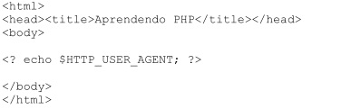
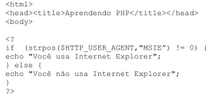
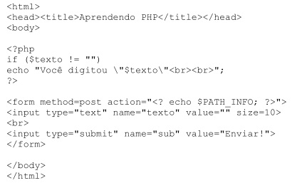
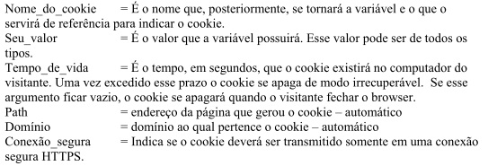
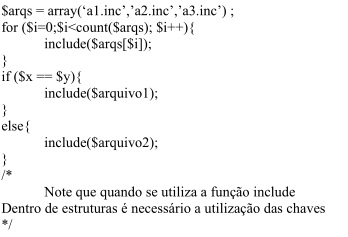
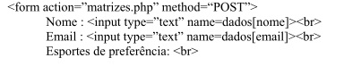
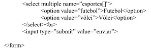
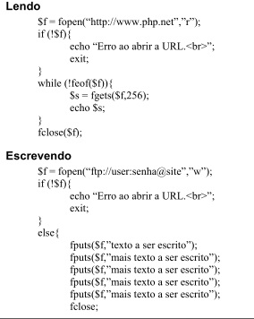

PHP AVANÇADO
Interagindo com o browserPHP também permite interagir com informações do browser automaticamente. Por exemplo, o script a seguir mostra informações sobre o browser do usuário.
Esse código em um Internet Explorer 6.0 com sistema operacional Windows 98, geraria: Mozilla/4.0 (compatible; MSIE 6.0; Windows 98)
Neste exemplo, será apenas exibido um texto informando se está sendo utilizado o Microsoft Internet Explorer ou não, mas para outras funções poderia ser utilizado algo semelhante.
É bom notar o surgimento de mais uma função no código anterior: strpos(string1,string2). Essa função retorna a posição da primeira aparição de string2 em string1, contando a partir de zero, e não retorna valor algum se não ocorrer. Assim, para testar se a string $HTTP_USER_AGENT contém a string “MSIE”, basta testar se strpos devolve algum valor.
Utilizando formulários HTMLAo clicar num botão “Submit” em um formulário HTML as informações dos campos serão enviadas ao servidor especificado para que possa ser produzida uma resposta. O PHP trata esses valores como variáveis, cujo nome é o nome do campo definido no formulário. O exemplo a seguir mostra isso, e mostra também como o código PHP pode ser inserido em qualquer parte do código HTML:

Ao salvar o arquivo acima e carregá-lo no browser, o usuário verá apenas um
formulário que contém um espaço para digitar o texto. Ao digitar um texto qualquer e
submeter o formulário, a resposta, que é o mesmo arquivo PHP (indicado pela constante
$PATH_INFO, que retorna o nome do arquivo) exibirá a mensagem "Você digitou
<
Isso ocorre porque o código PHP testa o conteúdo da variável $texto. Inicialmente ele é uma string vazia, e por isso nada é impresso na primeira parte. Quando algum texto é digitado no formulário e submetido, o PHP passa a tratá-lo como uma variável. Como no formulário o campo possui o nome “texto”, a variável com seu conteúdo será $texto. Assim, no próximo teste o valor da variável será diferente de uma string vazia, e o PHP imprime um texto antes do formulário.
CookiesCookies são mecanismos para armazenar e consultar informações nos browsers dos visitantes da página. O PHP atribui cookies utilizando a função setcookie, que deve ser utilizada antes da tag numa página.
O uso de cookies não é recomendado quando se trata de informações sigilosas. Os dados dos cookies são armazenados no diretório de arquivos temporários do visitante, sendo facilmente visualizado por pessoas mal intencionadas.
Além da opção “aceitar cookies” que pode ser desativada a qualquer momento pelo visitante.
Para uma transmissão de dados segura é recomendável o uso de sessões(ver adiante).
Setcookie(“nome_do_cookie”,”seu_valor”,”tempo_de_vida”,”path”,”domínio”,”conexão_s egura”)
 SessãoSessões são mecanismos muito parecidos com os tradicionais cookies. Suas diferenças são que sessões são armazenadas no próprio servidor e não expiram a menos que o programador queira apagar a sessão.
Existem algumas funções que controlam sessões e estão detalhadas no capítulo “12.Bibliotecas de funções”.
Aqui estão as funções de sessão mais usadas.
Nome da função Argumentos
Session_start() Não precisa de argumento
Session_register() A variável sem o cifrão
Session_unregister() A variável sem o cifrão
Session_is_registered() A variável sem o cifrão
O session_destroy() só deve ser usado quando for da vontade do programador acabar com todos as sessões daquele visitante, portanto muito cuidado com essa função.
RequireA função require põe o conteúdo de um outro arquivo no arquivo php atual, antes de ser executado. Quando o interpretador do PHP ler este arquivo, ele encontrará todo o conteúdo dos “require´s” adicionado no arquivo corrente.
Require(“nomedoarquivo”);
Criando o hábito de usar essa função, o programador pode vir a encontrar um erro de arquivo já declarado. Para evitar isso é recomendável que sempre que a função require for utilizada ela seja substituída pela função require_once.
Require_once(“nome_do_arquivo“);
IncludeA função Include é semelhante à função require, com a diferença que o código do arquivo incluído é processado em tempo de execução, permitindo que sejam usados “includes” dentro de estruturas de controle como for e while.
 Formulários AvançadosO PHP também entende as matrizes em forma de variáveis vindas de um formulário.
Exemplo:
 Depois de enviado, os campos se tornarão variáveis e campos como este “dados[nome]” se transformarão em arrays que não deixam de ser variáveis.
Arquivos RemotosNas funções que trabalham com arquivos, é possível utilizar URLs para acessar arquivos em outros servidores na Web ou no próprio servidor
As funções aqui utilizadas serão detalhadas mais à frente no capítulo “Biblioteca de Funções”.
Exemplo:
 Tratamento de errosExistem quatro tipos(até a versão 4.0) de erros no PHP para indicar a gravidade do erro encontrado ou ocorrido. Eles são:
1. Erros de funções (function errors)
2. Avisos (warnings)
3. Erros de processamento (parser error)
4. Observações (notice)
As mensagens de erro são uma coisa com que os programadores devem prestar muita atenção, afinal nenhum programador quer por no ar um sistema que quando o primeiro visitante entra apareça uma mensagem de erro. Para evitar essas inconveniências use sempre um “@” antes da cada chamada as funções. Se a opção track_errors no arquivo php.ini estiver habilitada, a mensagem de erro poderá ser encontrada na variável global $php_errormsg.
A chamada da função ficaria assim:
Essa função deixaria todos os caracteres em minúsculo, mas como não foi passado nenhum argumento essa função deveria exibir uma mensagem de erro